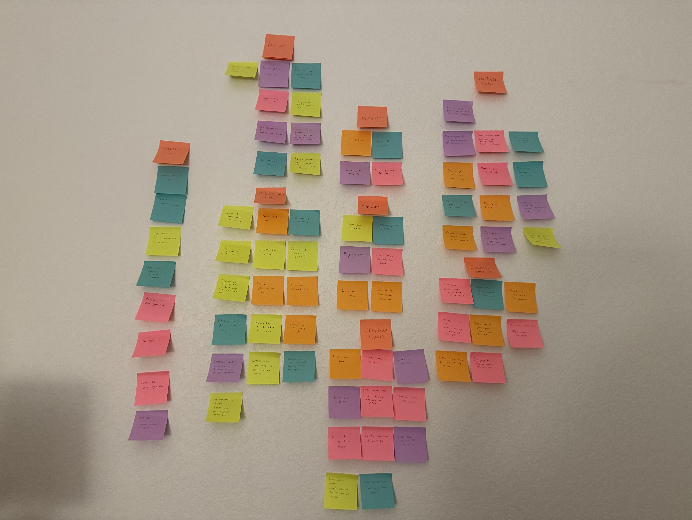
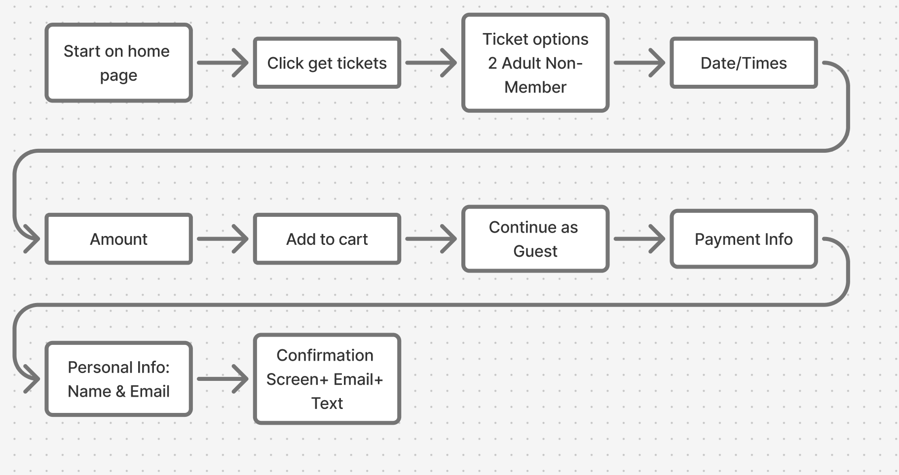
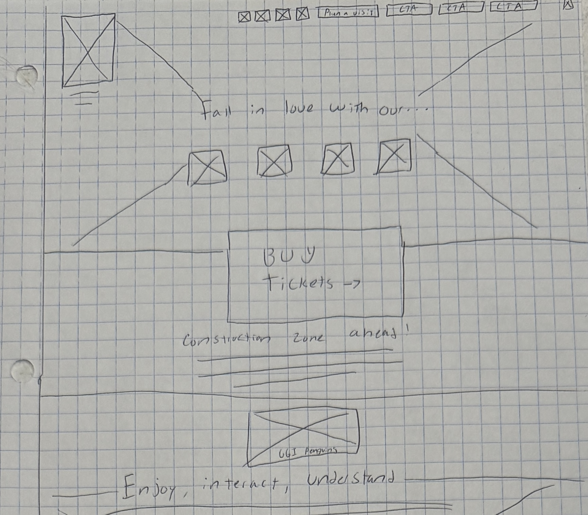

01 — Overview
At a glance
My Role
Sole UX Designer — research, wireframes, prototyping, testing
Timeline
8 weeks
Methods
Usability testing, affinity mapping, task flow analysis
The Cheyenne Mountain Zoo's website had a problem that was quietly costing them visitors: buying a ticket was genuinely confusing. I took on this redesign to understand exactly where people were getting stuck — and to design a solution grounded in what real users actually struggled with, not assumptions.
View Figma Prototype →02 — The Problem
Visitors were giving up before buying tickets
The existing website buried critical information — ticket prices, operating hours, available time slots — across multiple pages. Users who wanted to plan a simple family visit had to navigate a confusing information architecture just to answer basic questions like "how much does it cost?" and "how do I actually buy a ticket?"
"I just wanted to know the price. I clicked around for two minutes and never found it. I'd probably just call them."
— Participant 3, usability testThe core tension: the zoo had a lot to communicate — animals, events, conservation programs, memberships — but that richness was creating noise that buried the one thing most visitors came to the site to do.
Design Goals
- Make ticket purchasing the clearest, shortest path on the site
- Surface key visitor information (hours, pricing, what's included) without requiring navigation
- Reduce the number of decisions a user has to make before reaching checkout
- Create a design system that feels welcoming and on-brand with the zoo's natural setting
03 — Research
Finding out where people actually got stuck
Usability Testing on the Existing Site
I recruited 5 participants and gave them a single task: purchase 2 adult tickets for a specific date and time. I observed without intervening, noting where they hesitated, what they clicked, and where they expressed frustration out loud.
The results were more extreme than I expected. None of the 5 participants completed the task without significant friction. Two gave up entirely before reaching checkout.
All participants took multiple wrong turns before locating the ticket purchase path.
Participants couldn't find adult ticket pricing before committing to checkout.
Two participants gave up and said they'd "just call" or "look somewhere else."
Affinity Mapping
After testing, I transcribed observations and quotes onto sticky notes and grouped them by theme. Three clear clusters emerged: navigation confusion, checkout friction, and information overload. The navigation cluster was by far the largest — nearly every participant comment traced back to not being able to find what they needed.

Key Insight
I assumed the checkout form would be the biggest problem. Testing showed the real drop-off happened much earlier — users were failing to find the "Buy Tickets" button at all. That shifted my entire design focus toward the homepage and navigation before I touched the checkout flow.
— Design reflection"How Might We" Questions
From the affinity mapping clusters I distilled three design questions to focus the ideation phase:
How might we help first-time visitors find ticket pricing and availability without leaving the homepage?
How might we reduce the number of decisions a user has to make before they reach checkout?
How might we make critical information — hours, prices, what's included — immediately scannable without overwhelming the page?
04 — Define
Focusing on the right user at the right moment
Refined Problem Statement
Visitors planning a zoo trip need a fast, clear path from the homepage to a confirmed ticket — because the current site's information architecture and multi-step checkout process creates enough friction that users abandon the purchase entirely, costing the zoo conversions and visitors a frustrating experience.
Proposed Task Flow
I mapped the original 7-step flow against my proposed redesign. The key change wasn't just cutting steps — it was eliminating the decisions that caused hesitation. The original flow required users to navigate to a separate ticketing page, choose a ticket type with unclear labels, then re-enter date and time on a different screen. My redesign consolidates ticket type, date, and quantity onto a single screen.

05 — Design
From sketches to a visual system
Low Fidelity Wireframes
I started with paper sketches to test layout concepts quickly before committing to anything digital. The goal at this stage was purely structural — where does the "Buy Tickets" button live, how much information is on the homepage, and how does the ticket selection page consolidate what was previously three separate screens.

Mid Fidelity Wireframes
Moving to Figma, I fleshed out the full purchase flow across four screens. At this stage I was focused on information hierarchy — what's the first thing a user's eye lands on, and does that match what they need most?
Mid-fidelity wireframes — 4 screens
Visual Design System
I built a lightweight design system before moving to high fidelity, establishing the visual language that would run through all screens consistently:
- Typography: Montserrat for all text — chosen for legibility at small sizes and a clean, modern feel that complements the zoo's natural aesthetic without feeling corporate.
- Color palette: Earthy olive greens as the primary brand color, with persian orange for accent CTAs, viridian green for success states, and YinMn blue for informational elements. The palette was tested for WCAG AA contrast compliance.
- Icons: Consistent 24×24px outline icon set for navigation, interactive elements, and wayfinding throughout the purchase flow.
Brand design system — icons and color palette
06 — Prototype & Test
Building V1, then testing what broke
High Fidelity Prototype — V1
With the design system in place I built a fully interactive Figma prototype. The four key improvements over the original site:
Prominent "Buy Tickets" CTA above the fold
Testing showed users couldn't find the ticket path at all. I moved the CTA to the hero section, full width, impossible to miss — because a button users can't find doesn't exist.
Consolidated ticket type + date + time onto one screen
The original spread these decisions across three separate pages. Combining them reduces navigation overhead and lets users see the running total update as they make choices.
Pricing visible before checkout commitment
Three of five test participants said they couldn't find pricing on the existing site. I surfaced adult/child/senior pricing directly on the ticket selection screen.
High fidelity V1 — 5 screens
V1 Usability Testing — What I Found
I tested V1 with 3 new participants using the same scenario as the original test. All three completed the purchase — a dramatic improvement. But two patterns emerged that needed fixing:
- Operating hours were invisible. Two participants paused before buying tickets specifically to check the hours. They couldn't find them and expressed uncertainty. This was a confidence issue — users want to confirm the zoo will be open before committing to a purchase.
- The personal info form felt long. The two-column layout on desktop caused one participant to miss fields in the right column, assuming the form ended at the bottom of the left column.
"Wait, is it even open on Thursdays? I feel like I should check that first... I can't find it anywhere on this page."
— Participant 2, V1 testing07 — Final Design
V2 — Fixing what testing revealed
V2 wasn't a visual refresh — every change was directly traceable to a specific observation from V1 testing.
Operating hours added to homepage and ticket screen
Two participants paused to look for hours before buying. Adding them to the ticket selection screen removed a confidence barrier at exactly the right moment in the flow.
Single-column personal info layout
The two-column form caused a participant to skip fields in the right column. Single column removes that ambiguity — users always know where the next field is.
Dedicated payment screen with clear visual separation
Separating payment from personal info reduces cognitive load — users can focus on one type of information at a time rather than processing personal and financial fields simultaneously.
Ticket summary moved to top of confirmation
Users want immediate reassurance that their purchase went through correctly. Leading with the ticket details — date, time, number — answers the first question before they have to scroll.

High fidelity V2 — final design, 6 screens
08 — Results
What changed, and by how much
Checkout steps reduced
Eliminated three unnecessary navigation steps by consolidating ticket selection onto a single screen.
Task completion rate
All 5 final test participants completed the purchase unassisted. 0 completed it on the original site without friction.
Abandoned sessions
2 of 5 participants abandoned the original site entirely before completing a purchase. 0 abandoned in the redesign.
Abandoned sessions in V2
Compared to 2 out of 5 participants who abandoned entirely on the original site.
What I'd do differently
The biggest lesson from this project was about where to focus first. I went in assuming the checkout form was the problem — it's where e-commerce usually fails. But usability testing showed the real drop-off happened much earlier, at the homepage, before users even found the ticket path. That discovery completely reordered my priorities and led to a stronger solution. It's a reminder that assumptions, however reasonable, need to be tested before you design around them.
10 — Next Steps
Where this design could go further
Real-time availability
Show remaining ticket availability per time slot to create urgency and help users make faster decisions.
Progress indicator
Add a visible step indicator (1 of 3) so users always know how close they are to completing the purchase.
A/B test with real visitors
Run the redesigned flow against the original with analytics to measure actual conversion lift, not just task completion in testing.